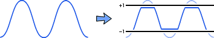

In your computer, audio is represented using a sequence of numbers. Each number represents the amplitude of the audio's sound wave for a tiny moment in time. Each of these numbers has a limited range of values. Clipping occurs when the wave's amplitude (height) is too large to fit in this limited range of numbers. If you look at a picture of the waveform, clipping appears as straight lines along the top or bottom of the graph. The clipped parts of the audio sound distorted because the information about the shape of the sound wave that falls outside of the available number range is missing.

Checker tests for clipping by looking for these straight lines in the shape of the waveform. It reports how much of the audio appears to be clipped on the Information tab. If the amount of clipping exceeds a certain threshold, it will be listed as an issue in the validation report. If the clipping was introduced while you were editing the file, you may be able to go back to an older version of the file, if you have one available. If the clipping occurred during recording, the only way to fix it is to do the recording over.
More Information: LibriVox Wiki: Setting Recording Input Level